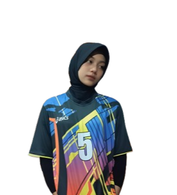

Makasihhhh Yaaa Jaziraaa! 😊
Udah nemenin aku lewatin semua hari-hari yang kadang lucu, kadang sedih, kadang bikin senyum-senyum sendiri!
Tahun baru nih, semoga kita terus bareng ya! Aku pengen lebih sering liat senyumanmu yang manis itu! 🥰
Kamu tuh kayak bintang yang selalu nerangin malammu, eh maksudnya hariku! 😄
Kuromi & Nailong juga bilang kamu yang paling cantik! Mereka iri sama aku! yahahahahahahahahahahahahahaha 😉
Terima Kasih Sudah Ada! 💝
Semoga tahun baru ini bawa lebih banyak kebahagiaan, tawa, dan cerita seru buat kita!
Aku selalu bersyukur punya kamu yang bisa diajak cerita tentang apa aja!
Jangan pernah berubah ya, karena kamu itu udah lebih sempurna dari kata sempurna! 🌟
Klik dong tombol chatt ( •̀ - •́ )